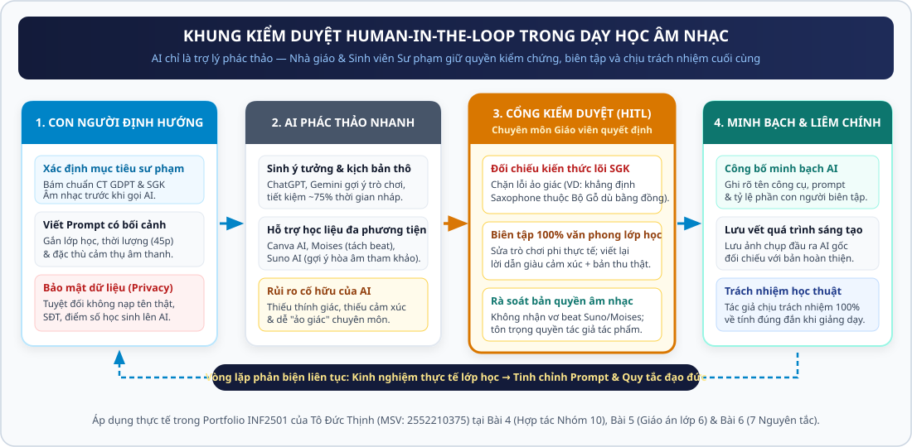

Chương 6: An toàn và liêm chính học thuật trong môi trường số • Bài tập 4 (mục 6.4) ★
Sử dụng AI có trách nhiệm trong học tập và nghiên cứu
Nghiên cứu đối chiếu chính sách AI trong giáo dục đại học, xây dựng khung kiểm duyệt Human-in-the-Loop cho Sư phạm Âm nhạc, cùng bộ tương tác 7 Nguyên tắc thẻ lật 3D và Trắc nghiệm 6 tình huống Liêm chính học thuật.
Human-in-the-Loop7 Thẻ lật 3D Nguyên tắcTrắc nghiệm Liêm chính (6 tình huống) ★
Thành phần 1
a) Mục tiêu bài tập
Tư duy phản biện & Liêm chính học thuật:
Phân tích các vấn đề đạo đức, bản quyền, bảo mật dữ liệu và rủi ro "ảo giác" (hallucination) khi dùng AI tạo sinh trong môi trường đại học.
Đối chiếu hướng dẫn ứng xử với AI giữa các mô hình giáo dục đại học quốc tế và Việt Nam để xây dựng quy tắc hành động rõ ràng.
Gắn kết thực tiễn Sư phạm Âm nhạc (INF2501):
Rút bài học kiểm chứng chuyên môn trực tiếp từ Bài 5 (tránh AI phân loại sai kèn Saxophone sang Bộ Đồng, biên tập 100% lời dẫn cảm xúc).
Bảo vệ dữ liệu riêng tư học sinh và tôn trọng quyền tác giả âm nhạc khi dùng Suno AI, Moises trong dự án Nhóm 10 (Bài 4).
Thành phần 2
b) Tóm tắt quá trình nghiên cứu & Đối chiếu chính sách AI
1. Đối chiếu khung chính sách AI trong môi trường Đại học
Qua tổng hợp các khung khuyến nghị phổ biến hiện nay (UNESCO 2023 về GenAI trong giáo dục và quy chế liêm chính học thuật tại các trường đại học quốc tế & Việt Nam), có thể phân nhóm thành 3 cách tiếp cận tiêu biểu:
Nhóm mô hình chính sách
Mức độ cho phép sử dụng AI
Yêu cầu Minh bạch & Trích dẫn
Hàm ý cho sinh viên Sư phạm Âm nhạc
Khung hướng dẫn quốc tế (UNESCO / Nhóm ĐH nghiên cứu mở)
Cho phép dùng AI làm công cụ hỗ trợ (assistive) trong brainstorm, cấu trúc ý, rà soát diễn đạt theo quy định từng môn.
Bắt buộc công bố tên công cụ, prompt/phạm vi sử dụng và chịu trách nhiệm kiểm chứng nguồn trích dẫn.
Cho phép dùng ChatGPT phác thảo trò chơi âm nhạc (Bài 5) nhưng phải lưu ảnh chụp đầu ra gốc & đối chiếu SGK.
Mô hình phân tầng theo học phần (ĐH khối Sư phạm / Nghệ thuật)
Phân 3 mức: Cấm ở bài đánh giá năng lực lõi; Cho phép có điều kiện ở học liệu; Khuyến khích sáng tạo có kiểm duyệt.
Không cho phép AI làm thay phần cảm thụ cá nhân hoặc tự đánh giá thực hành sư phạm.
Phần cảm nhận cá nhân (trang Tổng kết) và năng lực xướng âm, giảng dạy trên lớp phải do chính sinh viên thực hiện.
Quy định liêm chính học phần tại Việt Nam (như đề thi INF2501)
Khuyến khích ứng dụng AI sáng tạo trong sản phẩm số (+điểm thưởng) nhưng nghiêm cấm sao chép nguyên văn và lộ dữ liệu nhạy cảm.
Ghi rõ công cụ AI & mục đích sử dụng trong từng bài hoặc trang Tổng kết; không đăng CCCD, địa chỉ, tài khoản.
Mọi sản phẩm Nhóm 10 (Suno AI, Moises, Midjourney) và giáo án lớp 6 đều ghi chú rõ nguồn AI và phạm vi con người chỉnh sửa.
2. Ba rủi ro đạo đức trọng tâm trong Sư phạm Âm nhạc & Cách xử lý
Rủi ro 1: Ảo giác chuyên môn
Sai lệch kiến thức & nguồn giả
AI có thể tạo trích dẫn DOI không có thật (Bài 2) hoặc phân loại sai kèn Saxophone vào Bộ Đồng (Bài 5). Cách xử lý: Luôn tra cứu nguồn gốc và đối chiếu SGK trước khi giảng dạy.
Rủi ro 2: Quyền riêng tư số
Lộ dữ liệu cá nhân học sinh
Nhập họ tên, SĐT, bảng điểm học sinh THCS hoặc thông tin CCCD vào AI công cộng dễ gây rò rỉ dữ liệu. Cách xử lý: Ẩn danh hoàn toàn ngữ cảnh prompt (chỉ nêu "lớp 6", "tiết 45p").
Rủi ro 3: Tác quyền âm nhạc
Bản quyền beat & nhạc AI
Tách beat bằng Moises từ ca khúc có bản quyền hoặc sinh nhạc bằng Suno AI dễ gây tranh chấp nếu nhận vơ tác giả. Cách xử lý: Ghi rõ tác giả gốc, nguồn AI & chỉ dùng cho học tập.
Thành phần 3
c) Sản phẩm cuối cùng & Công cụ tương tác
1. Sơ đồ "Khung kiểm duyệt Human-in-the-Loop trong dạy học Âm nhạc"

Hình 6.1: Khung kiểm duyệt 4 bước Human-in-the-Loop (assets/bai6/khung_ai_co_trach_nhiem.svg) đặt cổng kiểm chứng chuyên môn của giáo viên ở trung tâm quy trình ứng dụng AI. (Nhấn vào hình để phóng to).
2. Tương tác 1: Bộ Thẻ lật 3D — 7 Nguyên tắc cá nhân sử dụng AI có trách nhiệm
Nhấn vào từng thẻ (hoặc dùng phím Tab + Enter) để lật xem diễn giải chi tiết và ví dụ áp dụng trực tiếp trong ngành Sư phạm Âm nhạc:
Đã khám phá 0/7 nguyên tắc (nhấn vào thẻ để lật)
3. Tương tác 2: Trắc nghiệm tình huống Liêm chính học thuật (6 tình huống thực tế)
Chọn phương án xử lý phù hợp cho từng tình huống gắn với thực tế học tập đại học, dự án Nhóm 10 và giảng dạy Âm nhạc THCS để nhận phản hồi tức thì và mở khóa huy hiệu hoàn thành: